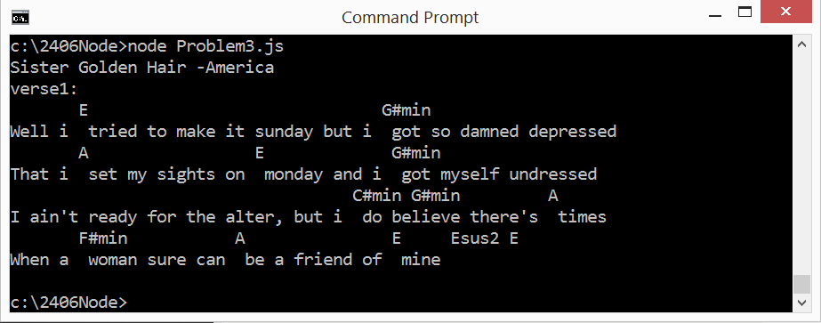
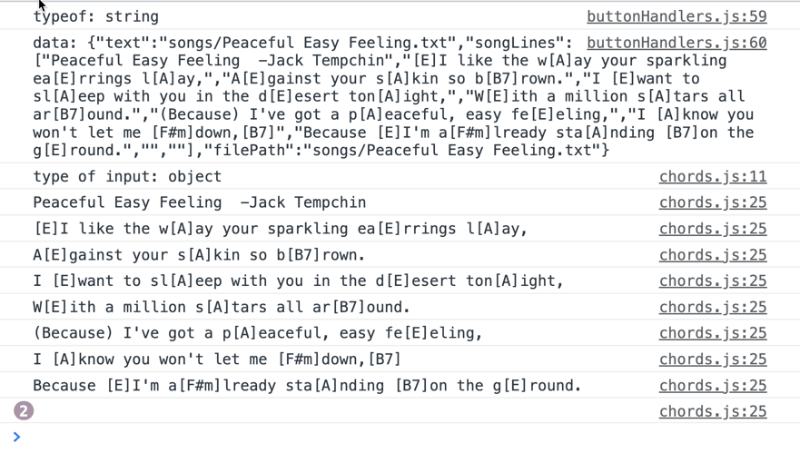
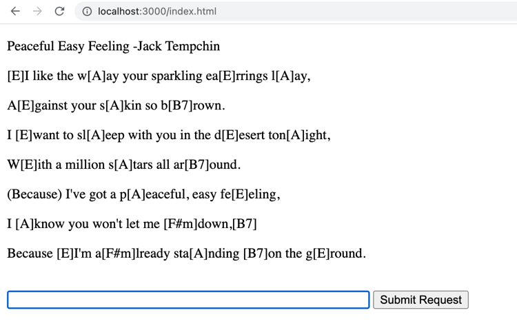
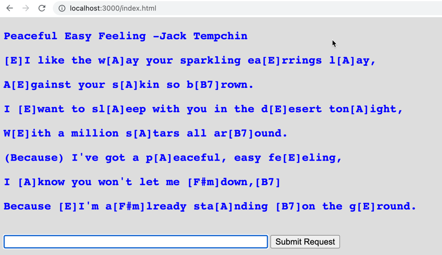
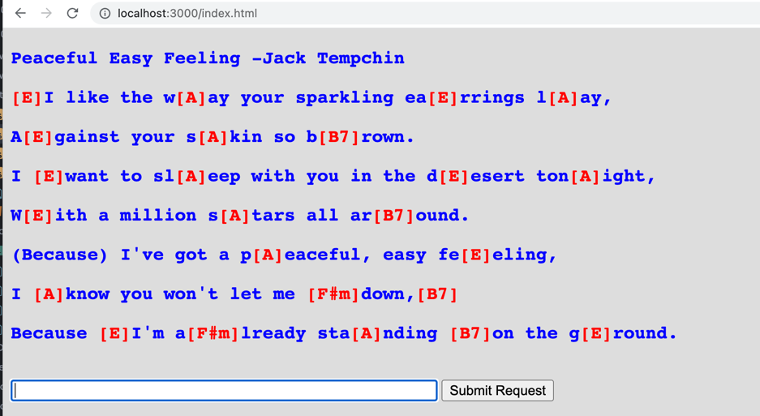

COMP 2406 - Winter 2023 Tutorial 02
Javascript Strings and the DOM
© L.D. Nel 2023
Revisions will be noted here
Description:
The purpose of this tutorial is to give you practice with basic features of javascript strings and manipulating the DOM (Document Object Model) with client-side javascript. The problems require knowledge of javascript strings (or arrays if you prefer to work with them). Familiarize yourself with the basics at, for example, https://www.w3schools.com/js/default.asp
Also, this tutorial will from an important starting point for the first assignment. At this point you are not expected to understand the server code or all the client code for making a request to the server. That code, however, does not need to be modfied in this tutorial.
Important: tutorials are meant to be started and submitted as homework. You can come and get help each week at the your registered tutorial session but it's best to get started before the session.
Tutorial Grading: To get credit for weekly tutorials you need to submit to brightspace your code and a ReadMe.txt file with at least your name, student number and the link to your YouTube screen capture demonstration video. The video should have sound narration and demonstrate that you have met the tutorial requirements. (Make sure your video is "unlisted" and not "private" on YouTube - otherwise we won't be able to view it and it will be counted as missing. Submit a single .zip file with all your contents to Brightspace. Brightspace should allow you to resubmit your file up until the due time and will only keep the most recent submission. Grade is 0,1, or 2 as follows:
| Mark | Tutorial Grading |
|---|---|
0marks |
No submission or incomplete submission. Submissions without accompanying video get a mark of 0. Note: mark is 0 if any of the following are true:
|
1mark |
Some, but not enough, requirements met or demonstrated. Note: mark is only 1 if any of the following are true:
|
2marks |
All requirements met and demonstrated in accompanying video for required problems. Does not include problems labelled as "Optional" |
PART 1: ON THE CONSOLE
Problem 1)
Problems 1,2 and 3 will be done in a console window and not a browser.
Download the demo_code_part1 folder and examine the javascript in the file problem1.js. It should look like that shown below.
function landscape() {
let result = ""
function flat(size) {
for (let count = 0; count < size; count++)
result += "_"
}
function hill(size) {
result += "/"
for (let count = 0; count < size; count++)
result += "'"
result += "\\"
}
//BUILD SCRIPT
flat(3)
hill(4)
flat(6)
hill(1)
flat(1)
//END SCRIPT
return result
}
console.log("")
console.log(landscape())
Run the code with node.js. It will write output to the console window (You don't need the browser.) It should produce a simple string output meant to look like a landscape profile like this:
___/''''\______/'\_
For problem 1 modify this code so that it uses the '_' underscore character for both the flat portions and the tops of the hills. That is, so that the following build script portion:
//BUILD SCRIPT flat(3) hill(5) flat(2) hill(3) flat(4) hill(0) flat(2) //END SCRIPT
produces output that looks like this:
_____ ___ ___/ \__/ \____/\_
To do this the underscore characters that form the top of the hills must be printed on the previous line of console output. That is, the output represents two lines of text unlike that of the demo code. Also notice that the hill can have a top with no flat portions so the argument passed to the hill() function represents width of the hill excluding its '/' and '\' characters.
To do this exercise you can use whatever you want from javascript: strings, arrays, objects whatever, though the solution does not require anything more complex than strings. You will have to figure out how to use the features you choose in javascript by reading about the language.
Problem 2)
For problem 2 make a new version of the code from the previous problem so you can have both mountains and hills. The output will now represent three lines of output text. Specifically, modify the code so that the following build script will produce the output shown.
//BUILD SCRIPT flat(3) mountain(3) flat(2) mountain(0) flat(4) hill(1) flat(1) //END SCRIPT
Output:
___
/ \ /\ _
___/ \__/ \____/ \_
Problem 3)
Don't Bore Us, Get To The Chorus
Problem 1 and 2 were a warm up, now lets use the strategy of breaking a line of text into two lines for a more useful purpose. We will again just do output on the console -you will not need the browser.
The demo code folder contains example code: file_read_asynch.js that can read the lines of a text file and return an array containing those lines. Pay attention to where the result of console.log("Done") appears in the output. Can you explain why it appears before the file contents are displayed?.
Background:
Many musicians, especially guitar players, rely on chord and lyric sheets to learn and play songs. A popular encoding format, called chord-pro, is often used to store chords and lyrics in a text file with the chord symbols embedded within the lyrics using square brackets like this.
Sister Golden Hair -America verse1: Well i [E] tried to make it sunday but i [G#min] got so damned depressed That i [A] set my sights on [E] monday and i [G#min] got myself undressed I ain't ready for the alter, but i [C#min] do [G#min] believe there's [A] times When a [F#min] woman sure can [A] be a friend of [E] mine [Esus2] [E] verse2: Well i [E] keep on thinkin bout you sister [G#min] golden hair surprise That i just can't live without you can't you [G#min] see it in my eyes I've been [A] one poor corre[F#min]spondent, i've been [C#min] too too [G#min] hard to [A] find But it [F#min] doesn't mean you [A] ain't been on my [E] mind [Esus2] [E] chorus: Will you [B] meet me in the middle will you [A] meet me in the [E] end Will you [B] love me just a little just en[A]ough to show you [E] care Well i [F#min] tried to fake it i [G#min] don't mind sayin i [A] just can't make it repeat intro, then verse 2, then chorus, then they do this doo-wop thing that uses the chorus (B - A - E) thing
This is a simplified version of chord pro format. It is an easy way to keep chords properly aligned with lyrics. Often text files in this format have a .crd extention or something like that but for our purposes we will use .txt.
When these files are displayed for the viewer, however, they are meant to be shown with the chords (with no brackets) appearing above the lyrics as follows.
Sister Golden Hair -America
verse1:
E G#min
Well i tried to make it sunday but i got so damned depressed
A E G#min
That i set my sights on monday and i got myself undressed
C#min G#min A
I ain't ready for the alter, but i do believe there's times
F#min A E Esus2 E
When a woman sure can be a friend of mine
Exercise:
Write the javascript that is necessary to read the lines from a chord pro text file in your songs directory and display the song's lyrics with the chords in the right location above the lyrics.
Your code will have to read the lines of the text file and convert each string containing both lyrics and chords into two strings: one containing just the chords and one containing just the lyrics. The chord string will have to have spaces appropriately placed so that the chords will appear properly above the correct word in the lyrics. (We are assuming your console is using a mono-space font.)
When you have completed this exercise your output to the console might look something like this:

PART 2: CLIENT-SERVER
Problem 4)
For the next two problems we will use the provided server and display the songs in a client's browser. For these problems no changes are required to server side code (found in server.js). Only client-side code will be affected. Those are in the .js files found in the html folder. Study the stucture of the code. We will have posted a YouTube lecture video walking you through this code. Again, no changes are needed to the server-side code.
For problems 4 and 5 you will start with the demonstration code in the demo_code_part2.
In the Chrome browser open the developer tools and choose the Console tab so you can see what the client side code prints to the browser console.
Nexct, open a command line terminal on the demo_code_part2 folder and launch the server there by executing:
node server.js
with the server running visit the URL http://localhost:3000/index.html. It will launch a webpage that looks the following with one text field and one button.
Type the name of the song "Peaceful Easy Feeling" into the textfield and hit the submit button. You should see on the console window the lines of the song being displayed that were obtained from the server when the submit buttons callback handler is run.

Locate the code that is generating this output. Hint part of it is in the button hander code and part of it is in the chord.js/parseChordProFormat() function. Notice how this output is letting us determine both the type of data we are dealing with and the contents of the data.
Currently all the parseChordProFormat() function does is print the lines of the song on the console. We want to also add them to the webpage. To do that add html paragraphs to the <div id="text-area"></div> div of DOM document as follows:
function parseChordProFormat(chordProLinesArray) {
//parse the song lines with embedded
//chord pro chords and add them to DOM
console.log('type of input: ' + typeof chordProLinesArray)
//add the lines of text to html <p> elements
let textDiv = document.getElementById("text-area")
textDiv.innerHTML = '' //clear the html
for (let i = 0; i < chordProLinesArray.length; i++) {
let line = chordProLinesArray[i]
console.log(line)
textDiv.innerHTML = textDiv.innerHTML + `<p> ${line}</p>`
}
}
Reload the page and again request the song "Peaceful Easy Feeling". The lines of the song should now be displayed for on the webpage has html paragraph elements.

Problem 5)
Now that we have the chord pro data being displayed as paragraph elements on the webpage we want to style the paragraphs including colouring the chords a different colour from the lyrics.
Add the following css style information within <style></style> tags within the <head></head> section of the index.html file.
<head>
<title>2406 A1</title>
<style>
/*element selectors: */
body {
background: #dddddd
}
p {
font-size: large;
font-weight: bold;
font-family: "Courier", Monospace;
color: blue;
}
/* class selectors: */
.chord {
font-size: large;
font-weight: bold;
font-family: "Courier", Monospace;
color: red;
}
/*id selectors: */
</style>
</head>
Reload the page again and request the song again. You should see the change in the font including its blue colour.

Finally modify the code so that the chords are placed in <span class="chord"></span> tags. To do this you need to loop through the characters representing an string and detect when a chord starts with the '[' character and when it ends with the ']' character.
Relaunch the page and request the song again. This time you should see the chords displayed in a different colour.

Finally test your code further by visiting the others songs represented by the txt files in the songs directory.
When you have completed these problems create a screen capture video, with sound, that demonstrates you've completed problem 3,4 and 5. Submit your code and readme.txt file (containing your YouTube link) to brightpace.